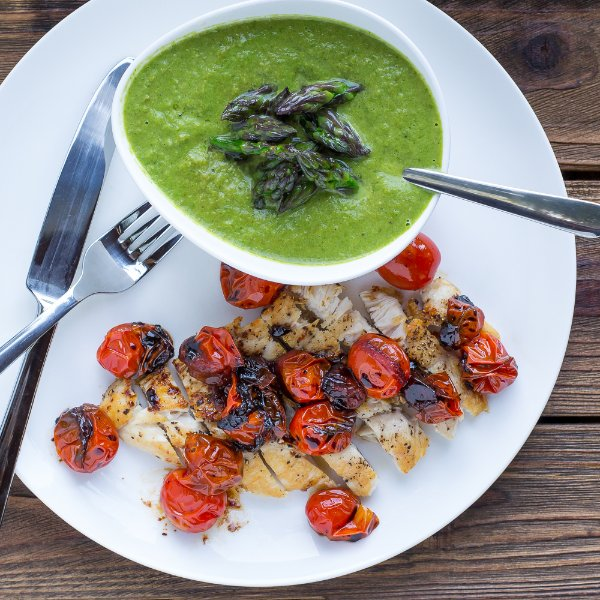

Asparagus Soup with Chicken Slices & Garlicky Grape Tomatoes

Total Time
45 min
Nutrition (per serving)
494.2 kcalCalories
47.7 gProtein
22 gCarbs
24.6 gFat
Full nutrition table
| Calories | 494.2 kcal |
| Total fat | 24.6 g |
| Saturated fat | 9.7 g |
| Trans fat | 0.5 g |
| Cholesterol | 155.1 mg |
| Sodium | 178.8 mg |
| Carbohydrates | 22 g |
| Fiber | 5.3 g |
| Sugars | 10.4 g |
| Protein | 47.7 g |
| Potassium | 1485.3 mg |
| Calcium | 120.5 mg |
| Iron | 5.4 mg |
| Vitamin A | 1546.6 IU |
| Vitamin C | 30.5 mg |
| Vitamin D | 10.3 IU |
Cookware
Ingredients
- 2 small bunchesasparagus
- 1 (5 oz) pkgbaby spinach
- 1 ½ lbchicken breasts, boneless skinless
- 24 fl ozchicken or vegetable broth
- 8 clovesgarlic
- 1 pintgrape tomatoes
- 4shallots
- balsamic vinegar
- black pepper
- butter, unsalted
- extra virgin olive oil
- salt
Steps
- Wash the asparagus and snap (or cut) off the woody ends. Cut off about 2 inches of the tips and reserve in a bowl. Chop the remaining stalks into 1 inch pieces.2 small bunches asparagus
- Peel and thinly slice the shallots into rings. Peel and mince the garlic.4 shallots
4 cloves garlic - Heat a large pot over medium heat.
- Add butter to the pot and swirl to coat bottom. Add reserved asparagus tips and cook until slightly softened, 2-3 minutes. Transfer back to the bowl and set aside.2 tbsp butter, unsalted
- Once tips have been removed, add more butter to the pot followed by asparagus stalks, shallots, and garlic. Season with salt and pepper. Increase heat to medium-high and cook, stirring occasionally, until softened, 5-6 minutes.2 tbsp butter, unsalted
½ tsp salt
½ tsp black pepper - Wash and dry the spinach; set aside.1 (5 oz) pkg baby spinach
- Wash the tomatoes. Peel and mince the remaining garlic.1 pint grape tomatoes
4 cloves garlic - Heat a skillet over medium heat.
- Slice the chicken in half horizontally to form thin fillets. Season both sides with salt and pepper.1 ½ lb chicken breasts, boneless skinless
¼ tsp salt
¼ tsp black pepper - Add oil to skillet and swirl to coat bottom. Add chicken and cook until golden brown and cooked through, 3-4 minutes per side. Transfer to a plate.1 tbsp extra virgin olive oil
- Add spinach to the asparagus and mix. Pour in the broth and bring to a boil. Turn heat off and purée with a hand (immersion) blender or transfer to a regular blender.24 fl oz (3 cups) chicken or vegetable broth
- Add olive oil and garlic to the skillet; cook until fragrant, 15-30 seconds. Reduce heat to low. Add the tomatoes and vinegar; cook, stirring frequently, until the vinegar has thickened slightly and the tomatoes have begun to burst, 4-6 minutes. Remove from heat.1 tbsp extra virgin olive oil
6 tbsp balsamic vinegar - Slice chicken on an angle into bite-sized strips.
- To serve, pour soup into a bowl, scatter the asparagus tips over top, and season with additional salt and pepper if desired. Place chicken slices on the side and top with tomatoes. Enjoy!